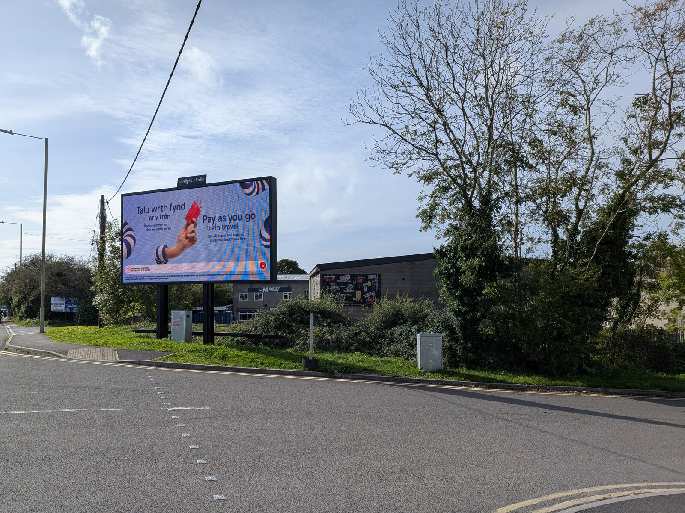

Reklama, «sponsored» va «native» kontent: pullik materialni mustaqil jurnalistikadan qanday ajratish
Zamonaviy tasma va yangilik saytlarida pullik material koʻpincha oddiy maqola, sharh yoki post qiyofasida chiqadi — bu «native» (tabiiy) reklama deyiladi. AQSh Savdo komissiyasi (FTC) qoidasiga koʻra reklama isteʼmolchiga reklama sifatida tanilarli boʻlishi va moddiy aloqa (toʻlov, sovgʻa) oshkor etilishi shart. Ushbu maʼlumotnoma sponsorlik kontenti, advertorial, influenser va affiliat reklamasini tushuntiradi va pullik materialni mustaqil jurnalistikadan ajratishning amaliy mezonlarini beradi — faqat faktlar asosida.

Yangilik tasmasida siz oʻqiyotgan «maqola» aslida pullik reklama boʻlishi mumkin. Bunday — mustaqil materialga oʻxshab ketadigan — pullik kontent «native» (tabiiy) reklama deyiladi va uni payqamaslik oson. Quyida pullik materialni mustaqil jurnalistikadan ajratish faqat rasmiy manbalarga (AQSh Savdo komissiyasi — FTC, jurnalistika etikasi kodekslari) tayangan holda tushuntiriladi. Bu media savodxonligi maʼlumotnomasi.
Asosiy tushunchalar
Reklama — tovar yoki xizmatni ilgari suruvchi pullik xabar; FTC qoidasi boʻyicha u isteʼmolchiga reklama sifatida tanilarli boʻlishi kerak. Native (tabiiy) reklama — FTC taʼrifiga koʻra «oʻzini oʻrab turgan yangilik, maqola, sharh yoki koʻngilochar materialga oʻxshaydigan» kontent. Sponsorlik kontenti (sponsored content) — brend tomonidan toʻlangan, nashr materiallari yonida turadigan maqola yoki video. Advertorial — maqola qiyofasidagi reklama. Influenser/affiliat reklamasi — mahsulotni tavsiya qilayotgan shaxs brend bilan «moddiy aloqa»ga ega boʻlsa (toʻlov yoki sotuvdan komissiya), bu oshkor etilishi shart.
FTC qoidasi: oshkoralik majburiy
AQSh Savdo komissiyasining «Guides Concerning the Use of Endorsements and Testimonials» hujjati (16 CFR Part 255; amaldagi tahrir 2023-yilda eʼlon qilingan) boʻyicha, mahsulotni tavsiya qiluvchi shaxs brend bilan har qanday moliyaviy, ish yoki shaxsiy aloqasini — jumladan bepul yoki chegirmali mahsulot olganini ham — oshkor qilishi shart. Oshkoralik «aniq va koʻzga tashlanadigan» (clear and conspicuous) boʻlishi, yaʼni oʻtkazib yuborish qiyin va oddiy isteʼmolchiga tushunarli boʻlishi hamda tavsiya xabarining oʻzi bilan birga turishi kerak. FTC «#ad» yoki «sponsored» kabi aniq belgilarni maʼqullaydi, ammo «sp», «spon», «collab» yoki yolgʻiz «ambassador» kabi noaniq teglarni yetarli deb hisoblamaydi. Oshkor qilish — influenserning oʻz zimmasidagi majburiyat.

Native reklama va FTC 2015-yilgi bayonoti
2015-yil 22-dekabrda FTC «Enforcement Policy Statement on Deceptively Formatted Advertisements» bayonotini chiqardi. Unga koʻra, reklamaning koʻrinishi isteʼmolchini uning tijorat tabiati borasida chalgʻitsa — jumladan reklama homiydan emas, boshqa tomondan kelgandek taassurot qoldirsa — bu aldov hisoblanadi. FTCning soʻzlariga koʻra, odamlar «koʻrayotgani tahririy kontentmi yoki reklamami — buni bilishga haqli». Shu kuni komissiya «Native Advertising: A Guide for Businesses» qoʻllanmasini ham chiqargan.
Pullik kontent amalda qanday belgilanadi
FTC aniq deb hisoblaydigan belgilar: «Ad», «Advertisement», «Paid Advertisement», «Sponsored Advertising Content». FTC noaniq yoki chalgʻituvchi deb ogohlantiradigan belgilar: «Promoted» yoki «Promoted Stories» («eng yaxshi holatda ikki maʼnoli»), shuningdek «Presented by», «Brought to You by», «Sponsored by [X]» kabi iboralar — ular homiy kontentni faqat moliyalagan, lekin yaratmagan degan taassurot berishi mumkin; yolgʻiz kompaniya logotipi ham yetarli emas. Amalda platformalarda «Sponsored», «Paid partnership», «Partner content», «Suggested Post», «#ad» kabi teglar uchraydi — koʻpincha kichik, kulrang yoki post oxirida, yaʼni payqash qiyin joyda.
Tahririy materialni pullikdan ajratish: «devor»
Jurnalistika etikasining asosiy tamoyili — reklama va tahririyat (newsroom) oʻrtasidagi «devor»: reklama tahririyatdan ajratilishi va unga taʼsir qilmasligi kerak. AQSh Professional jurnalistlar jamiyatining (SPJ) 2014-yilda qabul qilingan Etika kodeksi jurnalistlarga «yangilikni reklamadan ajrating va ikkisining chegarasini xiralashtiradigan aralash shakllardan voz keching» hamda «homiylik kontentini koʻzga tashlanadigan tarzda belgilang» deya koʻrsatma beradi. Material mustaqilmi yoki pullikmi — buni tekshirishning amaliy savollari quyida.
Oʻquvchi uchun tekshiruv roʻyxati
1) Oshkoralik belgisi («Ad», «Sponsored», «Paid post») bormi va u kontent bilan birga, koʻzga koʻrinadigan joydami yoki yashiringanmi? 2) Kim toʻlagan va kim yaratgan — material homiydan boshqa tomondan kelgandek koʻrsatilyaptimi? 3) Muallif — ismi koʻrsatilgan jurnalistmi yoki «[Brend] Partner», «Sponsored» yoki muallifsizmi? 4) Material faqat bitta mahsulotni maqtab, sotib olishga (ayniqsa affiliat havolalari orqali) yetaklayaptimi? 5) Reklama ekanini bilish uchun avval bosish yoki oʻzaro aloqaga kirish kerakmi — agar shunday boʻlsa, bu oshkoralik yetarli emasligidan dalolat.
Qizil bayroqlar
Kichik, kulrang yoki post oxiridagi «Promoted», «Presented by», «Partner content» kabi teg yoki yolgʻiz logotip; «#sp», «#spon», «collab» yoki yolgʻiz «ambassador» kabi noaniq teglar; yashirilgan (hashteglar orasiga yoki «ko‘proq» tugmasi ortiga koʻmilgan yoxud faqat profilda turgan) oshkoralik; jurnalist ismi koʻrsatilmagan material; va yangilikka oʻxshab, ammo faqat bitta mahsulotni maqtaydigan matn — bularning barchasi pullik material belgisi boʻlishi mumkin.
AQShdan tashqarida
Buyuk Britaniyada reklama standartlari organi (ASA) va CAP kodeksiga koʻra marketing xabari «aniq tanilarli» (obviously identifiable) reklama boʻlishi shart; agar siz har qanday shaklda (pul, sovgʻa, sayohat, mahsulot) toʻlov olgan va brend tahririy nazoratga ega boʻlsa, post reklama ekani yaqqol koʻrinishi kerak. ASAning eng aniq tavsiya etgan belgisi — «#ad», va isteʼmolchi uni bosmasdan yoki boshqa amal qilmasdan taniy olishi lozim.
Nega bu muhim
Pullik materialni mustaqil jurnalistikadan ajrata bilish — media savodxonligining asosiy koʻnikmasi. Qoida sodda: reklama reklama ekani bilinishi va kim toʻlagani oshkor boʻlishi kerak. Oshkoralik yoʻq, muallif noma’lum va material faqat bitta mahsulotni maqtab, sotib olishga yetaklayotgan boʻlsa — bu tahririy xabar emas, reklama ehtimoli yuqori. Ushbu maʼlumotnoma faqat tasdiqlangan qoidalarni keltiradi.

Manbalar
- FTC — Native Advertising: A Guide for Businesses (definition; 'Promoted' ambiguous; clear labels)
- FTC — Enforcement Policy Statement on Deceptively Formatted Advertisements (22 Dec 2015; right to know editorial vs ad)
- FTC — Disclosures 101 for Social Media Influencers (material connection; clear and conspicuous; #ad vs 'sp'/'collab')
- FTC — Guides Concerning the Use of Endorsements and Testimonials (16 CFR Part 255; 2023 revision, Federal Register 26 July 2023)
- Society of Professional Journalists — Code of Ethics (2014): distinguish news from advertising; label sponsored content
- UK Advertising Standards Authority (ASA/CAP) — Recognising ads on social media ('obviously identifiable'; '#ad')